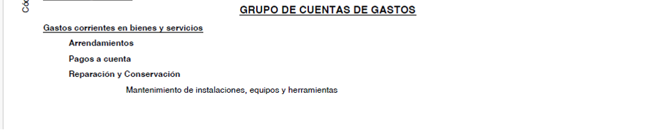
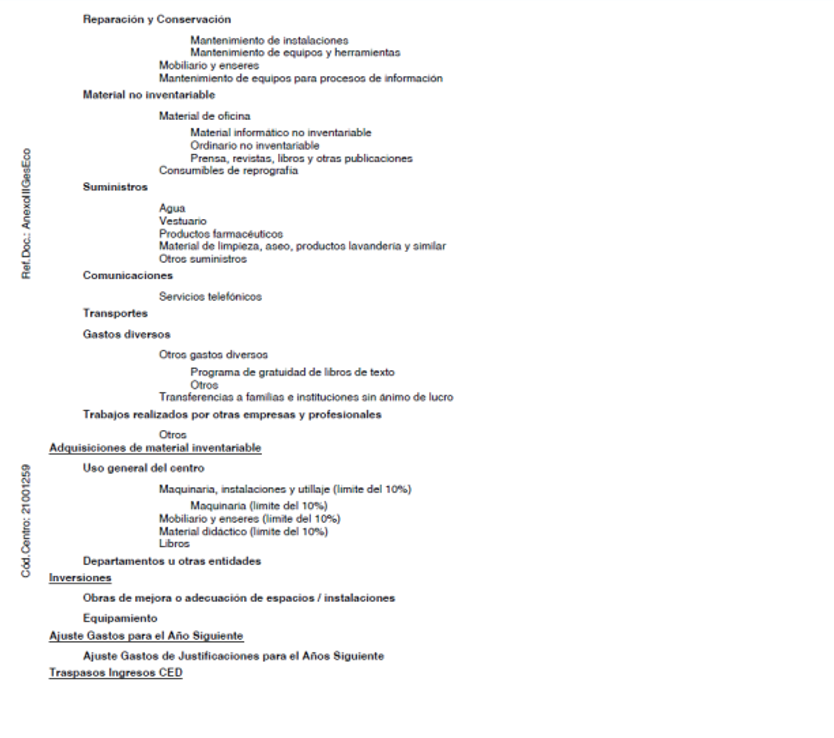

Presupuesto de los Centros Docentes Públicos
El presupuesto de los centros docentes públicos dependientes de la Consejería de Educación para cada curso escolar estará formado por el estado de ingresos y el de gastos.
Para su elaboración, se tomará como base la ORDEN de 10 de mayo de 2006, conjunta de las Consejerías de Economía y Hacienda y de Educación, por la que se dictan instrucciones para la gestión económica de los centros docentes públicos dependientes de la Consejería de Educación y se delegan competencias en los Directores y Directoras de los mismos.
Artículo 2 - Estado de Ingresos
El estado de ingresos de cada centro docente estará formado por:
- Los créditos asignados por la Consejería de Educación.
- Otros fondos procedentes del Estado, Comunidad Autónoma, Diputación, Ayuntamiento u otros entes públicos o privados.
- Ingresos derivados de la prestación de servicios distintos de los gravados por tasas.
- Ingresos por la venta de material o mobiliario obsoleto o deteriorado, con aprobación del Consejo Escolar.
- Cualesquiera otros que pudieran corresponderle al centro.
La Consejería de Educación, a través de la Dirección General competente:
- Fijará provisionalmente las cantidades para gastos de funcionamiento y las comunicará a los centros antes del 30 de noviembre de cada año.
- Fijará la cantidad definitiva antes de la liquidación del curso escolar.
- Comunicará antes del 31 de enero las cantidades destinadas a inversiones en reparaciones, mejoras, adecuación y equipamiento de instalaciones.
El presupuesto de ingresos se confeccionará de acuerdo con el modelo del Anexo I de la Orden, con tres columnas:
- Columna 1: previsión de ingresos propios.
- Columna 2: previsión de ingresos de la Consejería de Educación, subdividida en gastos de funcionamiento e inversiones.
- Columna 3: fondos procedentes de otras personas o entidades.
Artículo 3 - Estado de Gastos
El estado de gastos se confeccionará con cargo a recursos propios, de otras entidades o del presupuesto de la Consejería de Educación, siguiendo el modelo del Anexo II, con las siguientes condiciones:
- Ajustarse a los créditos disponibles.
- Distribuirse entre las cuentas de gasto necesarias para el normal funcionamiento, según el Anexo III.
- Garantizar la consecución de los objetivos para los que se conceden los fondos.
Adquisiciones con cargo al presupuesto
- Cubrir todas las necesidades básicas de funcionamiento.
- No superar el 10% del crédito anual para adquisiciones de equipos o material inventariable, salvo material bibliográfico.
- Contar con informe de la Delegación Provincial sobre su inclusión en la programación anual centralizada.
- Obtener la aprobación del Consejo Escolar.
Artículo 4 - Elaboración y Aprobación del Presupuesto
El presupuesto será elaborado por la Secretaría del centro, ajustado a los recursos consolidados de cursos anteriores y a las cantidades asignadas por la Consejería de Educación.
Corresponde al Consejo Escolar el estudio y aprobación del presupuesto, dentro de los plazos siguientes:
- Antes del 31 de octubre: aprobación del presupuesto inicial.
- Un mes tras la comunicación de fondos: aprobación de ajustes presupuestarios.
Artículo 5 - Vinculación del Presupuesto
El presupuesto vincula al centro en su cuantía total, pudiendo reajustarse en función de necesidades. Sin embargo:
- No se podrán destinar cantidades de inversión a gastos de funcionamiento.
- No se podrán destinar cantidades de funcionamiento a inversiones.


